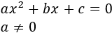
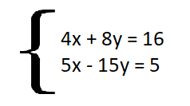
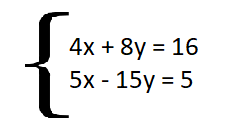
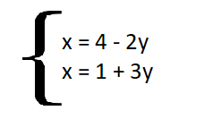
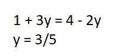
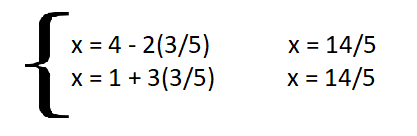
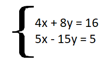
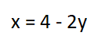
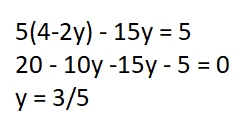

Calculadora de ecuaciones
¿Que función tiene esta calculadora?
Con este proyecto pretendemos brindar una herramienta fácil de usar que ayude a despejar ecuaciones elementales, ya sean las de primer o segundo grado.Quienes somos
Nosotros somos dos alumnos de Segundo Año de Ingenieria en Sistemas, que nos obligan a hacer esto xDContacto
Barbero Agustín: agubarbero22@gmail.comCaceres Martín: caceresmartin22@gmail.com
Enviar comentario o reportar problema:
Resolución
Para poder resolver una ecuacion de primer grado el objetivo consiste en encontrar el valor que debe tomar la incognita x para que se cumpla la igualdad. Por ejemplo:4x + 11 = 19
4x = 19 - 11
4x = 8
x = 8/4
x = 2
Calculadora de primer Grado
Inserte la ecuaciónx =
Resolución
Introducción Primer Grado Segundo Grado SIstemas de ecuaciones Algún Comentario? Escriba su comentario aqui! Enviar Resolución Para poder resolver una ecuación de segundo grado el objetivo consiste en encontrar los valores que debe tomar la incognitas x para que se cumpla la igualdad. La fórmula general de la ecuación de segundo grado es: Para resolver esta ecuación vamos a utilizar la fórmula de Bhaskara que tiene la siguiente forma:

Esta fórmula nos permite obtener los dos valores de X. el primer valor lo obtenemos con el signo más antes de la raíz y el segundo con el signo menos Por Ejemplo:

Calculadora de segundo Grado
Inserte la ecuaciónx1 = x2 =
Que es un sistema de ecuaciones?
Un sistema de ecuaciones algebraicas es un conjunto de dos o más ecuaciones con más de una incógnita que conforman un problema matemático. Este consiste en encontrar los valores de las incógnitas que satisfacen dichas operaciones. Para poder resolver estos sistemas se tienen que tener igual cantidad de incógnitas que ecuaciones. Por ejemplo:
Metodos de resolucion
Para resolver este sistemas de ecuaciones existen varios caminos que podemos tomar para llegar al resultado. Estos son:1.- Metodo de Igualacion
2.- Metodo de Sustitucion
Metodos de igualacion
Supongamos que tenemos el mismo sistema de ecuaciones que utilizamos en el principio.
Primero lo que debemos hacer es despejar, en ambas ecuaciones, la misma variable (En este caso X) 
Luego igualamos ambas ecuaciones entre sí y despejamos la otra variable (En este caso Y) 
Para finalizar, lo que hacemos es reemplazar el valor que obtuvimos en alguna de las dos ecuaciones del principio para obtener el resultado de la otra variable.

Metodos de sustitucion
Supongamos que tenemos el mismo sistema de ecuaciones que utilizamos en el principio. Primero despejamos cualquier incógnita en alguna de las 2 ecuaciones (En este caso la primer ecuación con la variable X)

Luego sustituimos la variable que no despejamos por esta ecuación y despejamos.

Una vez que obtuvimos el valor de la variable, reemplazamos este valor en la ecuación del principio como hicimos en el método anterior